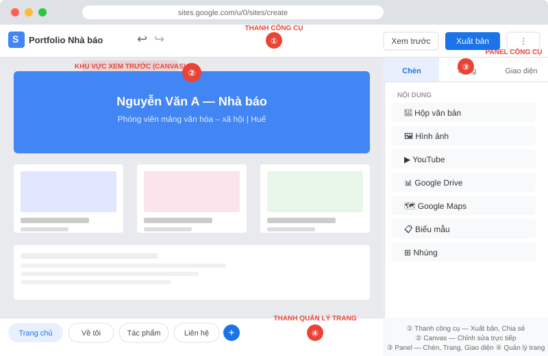
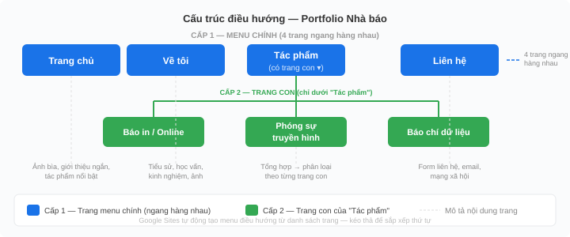
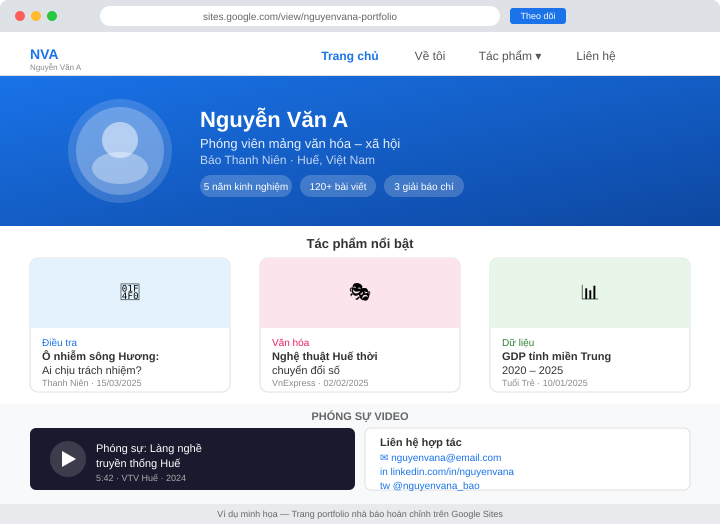

Làm quen với Google Sites
Sau chương này, sinh viên có thể:
- Giải thích vai trò của trang web cá nhân trong tác nghiệp báo chí hiện đại
- Mô tả các thành phần giao diện của Google Sites và chức năng từng phần
- Tạo trang web đa trang với cấu trúc điều hướng hợp lý
- Nhúng nội dung từ Google Drive và các dịch vụ ngoài (YouTube, Maps, Lịch)
- Xuất bản trang và cấu hình quyền truy cập phù hợp từng mục đích sử dụng
- Cộng tác nhóm và quản lý phiên bản trên Google Sites
1.1 Tại sao nhà báo cần trang web cá nhân?
Trong kỷ nguyên truyền thông số, một nhà báo không chỉ là người viết bài cho tòa soạn — họ còn là một thương hiệu cá nhân. Tên tuổi, chuyên môn và phong cách tác nghiệp của họ được nhận diện không chỉ qua tên trên tờ báo mà còn qua sự hiện diện kỹ thuật số độc lập.
Trang web cá nhân là nơi tập hợp toàn bộ tác phẩm, thể hiện năng lực nghề nghiệp trước mắt độc giả, nhà tuyển dụng và cộng đồng báo chí. Không như mạng xã hội — nơi nội dung bị giới hạn bởi thuật toán và chính sách nền tảng — trang web cá nhân là không gian bạn hoàn toàn kiểm soát: từ giao diện, cách trình bày đến thông điệp muốn truyền tải.
Theo khảo sát của Reuters Institute for the Study of Journalism (2023), hơn 60% biên tập viên tuyển dụng tìm kiếm portfolio trực tuyến của ứng viên trước khi phỏng vấn. Trang web cá nhân là CV sống của nhà báo hiện đại — luôn cập nhật, luôn tiếp cận được.
Trang web cá nhân phục vụ những mục đích gì?
Tùy theo giai đoạn sự nghiệp, trang web cá nhân của nhà báo có thể đóng những vai trò khác nhau:
| Giai đoạn | Mục đích chính | Nội dung nên có |
|---|---|---|
| Sinh viên / Tập sự | Xây dựng portfolio ban đầu | Bài viết thực tập, bài học thuật tốt nhất, thông tin liên hệ |
| Phóng viên mới vào nghề | Tìm kiếm cơ hội tốt hơn | Tác phẩm nổi bật, chuyên đề đã viết, giải thưởng |
| Nhà báo có kinh nghiệm | Định vị chuyên gia | Bình luận chuyên sâu, sách/nghiên cứu, lịch nói chuyện |
| Nhà báo freelance | Thu hút khách hàng | Dịch vụ, báo giá, tác phẩm đã xuất bản, testimonial |
Hãy bắt đầu xây dựng portfolio ngay từ khi còn là sinh viên, không chờ đến khi "có nhiều bài hay hơn". Ba bài viết bình thường nhưng có trang web vẫn tốt hơn mười bài xuất sắc mà không ai tìm được.
1.2 Google Sites là gì?
Google Sites là công cụ tạo trang web miễn phí trong hệ sinh thái Google Workspace. Không cần biết lập trình, không cần mua hosting, không cần cài đặt phần mềm — chỉ cần tài khoản Google là có thể tạo và xuất bản trang web hoàn chỉnh trong vòng 30 phút.
Ra mắt lần đầu năm 2008 và được thiết kế lại hoàn toàn vào năm 2016, Google Sites thế hệ mới sử dụng mô hình kéo-thả (drag-and-drop) với các khối nội dung linh hoạt. Trang web được lưu trữ trực tiếp trên máy chủ của Google — tức là bạn không cần lo về băng thông, bảo mật máy chủ hay sao lưu dữ liệu.
So sánh Google Sites với các nền tảng khác
| Tiêu chí | Google Sites | WordPress.com | Wix | Squarespace |
|---|---|---|---|---|
| Chi phí cơ bản | Miễn phí | Miễn phí / $4–$45/tháng | Miễn phí / $17–$35/tháng | $16–$49/tháng |
| Kỹ thuật cần thiết | Không cần | Cơ bản | Không cần | Không cần |
| Tích hợp Google | Xuất sắc (native) | Tốt (qua plugin) | Trung bình | Trung bình |
| Tùy chỉnh giao diện | Hạn chế | Rất linh hoạt | Linh hoạt | Đẹp, hạn chế hơn |
| Phù hợp cho | Portfolio, trang dự án nhỏ | Blog, trang tin tức | Portfolio, business nhỏ | Portfolio sáng tạo |
| Thời gian học | 30–60 phút | Vài ngày | 1–2 ngày | 1–2 ngày |
Google Sites không phù hợp cho: (1) trang tin tức với hàng trăm bài viết; (2) trang cần hệ thống bình luận và tương tác phức tạp; (3) trang thương mại điện tử; (4) blog cần RSS feed. Đây là công cụ lý tưởng cho portfolio cá nhân, trang dự án hoặc trang giới thiệu nhỏ. Với các mục đích chuyên nghiệp hơn, hãy học WordPress (Chương 4).
1.3 Khám phá giao diện Google Sites
Trước khi bắt tay vào tạo trang, cần nắm vững các thành phần giao diện của Google Sites. Giao diện soạn thảo được chia thành 4 khu vực chính:

1. Thanh công cụ phía trên
Gồm các nút điều hướng và hành động chính:
- Tên trang web (góc trái) — nhấn để đổi tên dự án
- Hoàn tác / Làm lại — Ctrl+Z / Ctrl+Y (quan trọng khi làm hỏng layout)
- Xem trước — kiểm tra trang trông như thế nào trên màn hình thực, trước khi xuất bản
- Xuất bản — đăng trang lên internet
- Chia sẻ — mời người khác cộng tác chỉnh sửa
2. Khu vực xem trước (Canvas)
Đây là vùng trung tâm, hiển thị trang đang chỉnh sửa. Bạn nhấp trực tiếp vào bất kỳ phần tử nào để chỉnh sửa. Google Sites dùng mô hình WYSIWYG (What You See Is What You Get — bạn thấy gì thì hiện thị như vậy), nghĩa là bố cục khi chỉnh sửa gần giống với kết quả cuối cùng.
3. Panel công cụ bên phải
Panel này thay đổi tuỳ theo bạn đang làm gì:
- Tab Chèn — danh sách các loại nội dung có thể thêm vào (xem mục 1.4)
- Tab Trang — quản lý cấu trúc trang (tạo trang mới, đặt trang con)
- Tab Giao diện — chọn theme, font chữ, bảng màu cho toàn bộ trang web
4. Thanh quản lý trang (dưới Panel)
Hiển thị danh sách tất cả các trang trong trang web. Kéo-thả để thay đổi thứ tự; kéo vào trong một trang khác để tạo trang con (subpage).
Google Sites phân biệt hai đơn vị: Section (phần/khối trong một trang) và Page (trang riêng biệt). Một trang web có thể có nhiều trang (như menu navigation), mỗi trang có nhiều section được cuộn từ trên xuống. Hãy nghĩ giống như một tờ báo: "trang" là từng trang giấy, "section" là các cột hay khung trong một trang.
Các loại Section cơ bản
Khi nhấn + Thêm mục trong khu vực canvas, bạn có thể chọn các loại section:
| Loại Section | Mô tả | Dùng khi nào |
|---|---|---|
| Tiêu đề | Banner lớn ở đầu trang, thường có ảnh nền | Đầu trang chủ, đầu từng trang |
| Văn bản | Khối văn bản thuần, có thể định dạng | Nội dung bài viết, mô tả |
| Hình ảnh | Một hoặc nhiều ảnh cạnh nhau | Gallery ảnh, ảnh minh họa |
| Ảnh và văn bản | Bố cục 2 cột: ảnh trái/phải + text | Giới thiệu tác phẩm, profile |
| Thẻ | Lưới các ô vuông nhỏ, mỗi ô có ảnh + tiêu đề | Danh sách tác phẩm, dịch vụ |
| Băng chuyền | Ảnh hoặc thẻ trượt ngang | Portfolio, testimonial |
| Dạng trang thu nhỏ | Hiển thị nội dung từ trang khác trong site | Trang chủ tổng hợp |
1.4 Xây dựng trang đa cấp và điều hướng
Một trang web chuyên nghiệp không chỉ có một trang duy nhất — nó cần cấu trúc điều hướng (navigation) rõ ràng để người đọc tìm đúng nội dung mình cần. Google Sites tự động tạo menu điều hướng từ danh sách trang bạn xây dựng.
Cấu trúc điều hướng cơ bản cho nhà báo
Dưới đây là cấu trúc điều hướng 2 cấp phù hợp cho portfolio nhà báo:

| Cấp | Trang | Nội dung |
|---|---|---|
| Cấp 1 (menu chính) | Trang chủ | Giới thiệu ngắn, tác phẩm nổi bật, liên hệ nhanh |
| Cấp 1 | Về tôi | Bio đầy đủ, học vấn, kinh nghiệm, ảnh |
| Cấp 1 | Tác phẩm | Portfolio tổng hợp |
| Cấp 2 (submenu) | Tác phẩm → Báo in/online | Các bài viết đã đăng |
| Cấp 2 | Tác phẩm → Phóng sự truyền hình | Embed video YouTube |
| Cấp 2 | Tác phẩm → Báo chí dữ liệu | Biểu đồ, infographic |
| Cấp 1 | Liên hệ | Form liên hệ, mạng xã hội, email |
Tạo trang mới và trang con
- Trong panel bên phải, chọn tab Trang
- Nhấn nút + (Thêm trang) ở dưới cùng
- Nhập tên trang → nhấn Xong
- Để tạo trang con (submenu): trong tab Trang, kéo tên trang vào trong trang cha, hoặc nhấn vào ba chấm (...) cạnh tên trang → Thêm trang phụ
Tên trang sẽ hiển thị trong menu điều hướng, vì vậy hãy đặt ngắn (1–3 từ) và rõ ràng. Thay vì "Các bài viết đã xuất bản của tôi", hãy dùng "Bài viết" hoặc "Tác phẩm". Thanh menu sẽ trông gọn và chuyên nghiệp hơn.
Chỉnh sửa điều hướng nhanh
Google Sites tự động tạo menu từ danh sách trang. Bạn có thể ẩn trang khỏi menu (không hiển thị trong navigation nhưng vẫn truy cập được qua URL) bằng cách: trong tab Trang → nhấn ba chấm cạnh tên trang → bỏ chọn Hiện trang này trong điều hướng.
1.5 Nhúng nội dung từ Google Drive
Một trong những điểm mạnh nhất của Google Sites là khả năng nhúng trực tiếp mọi loại tài liệu từ Google Drive mà không cần chuyển đổi định dạng. Nội dung được đồng bộ tự động — khi bạn chỉnh sửa tài liệu trong Drive, trang web cũng cập nhật theo ngay lập tức.
Các loại nội dung Drive có thể nhúng
| Loại file | Ứng dụng trong báo chí | Ví dụ |
|---|---|---|
| Google Docs | Bài viết, script phỏng vấn, hồ sơ nhân vật | Nhúng bản thảo bài điều tra |
| Google Slides | Infographic nhiều trang, thuyết trình | Slide giới thiệu chủ đề điều tra |
| Google Sheets | Bảng dữ liệu, bảng so sánh | Danh sách nguồn tài liệu tham khảo |
| Google Forms | Thu thập phản hồi độc giả, khảo sát | Form liên hệ, đăng ký nhận tin |
| PDF, Word, Excel | Tài liệu gốc, báo cáo chính thức | Nhúng báo cáo tài chính công ty |
Cách nhúng tài liệu Drive
- Trong panel Chèn, kéo xuống phần Google Drive → chọn loại tài liệu (Tài liệu / Trang trình bày / Bảng tính / Biểu mẫu)
- Cửa sổ chọn file Drive mở ra → tìm và chọn file cần nhúng
- Nhấn Chèn — tài liệu xuất hiện dưới dạng khung nhúng trên trang
- Kéo góc để điều chỉnh kích thước khung
Để người xem thấy được tài liệu nhúng, file trên Drive phải được chia sẻ công khai hoặc ít nhất "Bất kỳ ai có đường liên kết đều có thể xem". Nếu file ở chế độ riêng tư, khách truy cập sẽ thấy thông báo lỗi quyền truy cập thay vì nội dung.
Ứng dụng thực tế: Nhúng Google Form làm form liên hệ
Google Forms là cách đơn giản nhất để tạo form liên hệ cho trang portfolio. Toàn bộ phản hồi được lưu vào Google Sheets tự động — không cần backend hay code.
- Truy cập forms.google.com → tạo form với các trường: Họ tên, Email, Nội dung
- Xuất bản form (nhấn nút Gửi → tab link → sao chép link)
- Trong Google Sites, chèn Google Forms → chọn form vừa tạo
- Đặt section liên hệ ở cuối trang Liên hệ
1.6 Nhúng nội dung từ dịch vụ ngoài
Ngoài Google Drive, Google Sites còn hỗ trợ nhúng nội dung từ hàng chục dịch vụ bên ngoài thông qua embed code (mã nhúng). Đây là tính năng quan trọng để tạo trang phóng sự đa phương tiện phong phú mà không cần lưu trữ file nặng trên máy chủ.
YouTube — Nhúng video
- Vào video trên YouTube → nhấn Chia sẻ → Nhúng
- Sao chép mã nhúng (
<iframe ...>) - Trong Google Sites, panel Chèn → cuộn xuống → Nhúng → dán mã vào ô URL/Nhúng
- Nhấn Chèn → video xuất hiện ngay trong trang
Google Sites cũng hỗ trợ thêm YouTube qua panel Chèn → YouTube → dán URL video. Cách này tiện hơn vì không cần lấy embed code. Tuy nhiên, nếu cần nhúng từ Vimeo, TikTok hoặc các nền tảng khác, bắt buộc phải dùng cách mã nhúng.
Google Maps — Nhúng bản đồ
Bản đồ nhúng rất hữu ích trong bài phóng sự về địa điểm, thiên tai, sự kiện xã hội.
- Truy cập maps.google.com → tìm địa điểm cần nhúng
- Nhấn Chia sẻ (biểu tượng <) → Nhúng bản đồ
- Chọn kích thước phù hợp → Sao chép HTML
- Dán mã vào Google Sites qua chức năng Nhúng như với YouTube
Lịch Google — Nhúng lịch sự kiện
Nếu bạn tổ chức sự kiện báo chí, tọa đàm hoặc lớp học, nhúng Google Calendar trực tiếp vào trang giúp độc giả thấy lịch cập nhật realtime.
- Mở calendar.google.com → chọn lịch cần chia sẻ → Cài đặt lịch
- Cuộn xuống phần Tích hợp lịch → sao chép mã nhúng
- Dán vào Google Sites qua chức năng Nhúng
Mã nhúng tùy chỉnh (Custom embed)
Nhiều công cụ báo chí dữ liệu như Datawrapper và Flourish (học ở Chương 6) cũng cung cấp mã nhúng <iframe>. Cùng một quy trình: lấy embed code → dán vào Google Sites. Đây là cách tạo trang phóng sự dữ liệu tương tác mà không cần biết lập trình.
Kỹ thuật nhúng biểu đồ tương tác từ Datawrapper và Flourish vào Google Sites được trình bày chi tiết tại Chương 6 — Báo chí dữ liệu & Trực quan hóa. Kỹ thuật nhúng audio podcast và ảnh gallery đa phương tiện được trình bày tại Chương 8 — Multimedia Storytelling.
1.7 Xuất bản, quyền truy cập và tên miền
Sau khi hoàn thiện nội dung, bước cuối là xuất bản trang để mọi người có thể truy cập. Google Sites cung cấp ba cấp độ quyền truy cập tương ứng với ba mục đích sử dụng khác nhau.
Ba chế độ quyền truy cập
| Chế độ | Ai xem được? | Phù hợp cho |
|---|---|---|
| Công khai | Bất kỳ ai, không cần đăng nhập | Portfolio cá nhân, trang dự án muốn nhiều người biết |
| Bất kỳ ai có đường liên kết | Người có link, không cần đăng nhập | Chia sẻ giới hạn (cho nhà tuyển dụng, nhà biên tập) |
| Hạn chế | Chỉ người được mời cụ thể (email) | Bản thảo nội bộ, trang làm việc nhóm |
Quy trình xuất bản
- Nhấn nút Xuất bản (màu xanh) ở góc trên phải
- Tại trường "Địa chỉ web", nhập tên đường dẫn mong muốn (ví dụ: nguyenvana-portfolio) → URL sẽ là sites.google.com/view/nguyenvana-portfolio
- Trong phần "Ai có thể xem trang này", chọn chế độ phù hợp
- Nhấn Xuất bản để hoàn tất
- Sau khi xuất bản, nút chuyển thành Xuất bản lại — nhấn mỗi lần muốn cập nhật thay đổi mới nhất lên web
Đây là điểm nhiều người mới hay quên: sau khi chỉnh sửa nội dung, trang web công khai chưa cập nhật cho đến khi bạn nhấn Xuất bản lại. Nếu bạn thêm nội dung mới nhưng người xem vẫn thấy trang cũ, đó chính là nguyên nhân.
Tên miền tùy chỉnh
Mặc định, URL Google Sites có dạng dài và không chuyên nghiệp: sites.google.com/view/ten-cua-ban. Để có địa chỉ riêng như nguyenvana.com, bạn cần:
- Mua tên miền từ nhà cung cấp (Namecheap ~$10–15/năm, GoDaddy, Inet.vn cho tên miền .vn)
- Trong cài đặt Google Sites → Tên miền tùy chỉnh → nhập tên miền đã mua
- Google cung cấp một mã xác minh CNAME → vào trang quản lý DNS của nhà cung cấp tên miền → thêm bản ghi CNAME theo hướng dẫn
- Chờ 24–48 giờ để DNS cập nhật toàn cầu
Với sinh viên đang học, tên miền mặc định sites.google.com/view/... là hoàn toàn chấp nhận được. Khi bước vào môi trường làm việc chuyên nghiệp, tên miền riêng (~$10–15/năm) là khoản đầu tư đáng giá cho hình ảnh cá nhân.
1.8 Cộng tác nhóm và quản lý phiên bản
Google Sites hỗ trợ cộng tác nhóm theo thời gian thực — nhiều người cùng chỉnh sửa một trang cùng lúc, tương tự như Google Docs. Đây là tính năng hữu ích cho dự án nhóm, trang toà soạn học sinh hoặc bài tập nhóm cuối môn học.
Mời cộng tác viên
- Nhấn nút Chia sẻ (biểu tượng người + dấu cộng) ở thanh trên
- Nhập địa chỉ email của người cần mời
- Chọn vai trò: Người xem (chỉ đọc) hoặc Người chỉnh sửa (có thể sửa)
- Nhấn Gửi — người được mời nhận email với link truy cập
Khi làm việc nhóm, chỉ cấp quyền "Người chỉnh sửa" cho thành viên thực sự cần. Giảng viên hoặc khách đánh giá chỉ cần quyền "Người xem". Tránh cấp quyền chỉnh sửa cho người ngoài nhóm vì họ có thể vô tình xóa nội dung.
Lịch sử phiên bản
Google Sites lưu lịch sử chỉnh sửa tự động. Nếu vô tình xóa nội dung quan trọng hoặc layout bị phá, bạn có thể quay về phiên bản trước:
- Nhấn menu ba chấm ⋮ ở góc trên phải
- Chọn Lịch sử phiên bản
- Xem danh sách các lần lưu → nhấn vào phiên bản muốn xem để xem trước
- Nhấn Khôi phục phiên bản này để quay về trạng thái đó
Trước mỗi buổi chỉnh sửa lớn (thêm nhiều nội dung, thay đổi layout toàn bộ), hãy tạo một bản checkpoint bằng cách: menu ⋮ → Lịch sử phiên bản → Đặt tên phiên bản này. Bạn sẽ dễ tìm lại hơn trong danh sách dài.
1.9 Thực hành: Xây dựng portfolio nhà báo hoàn chỉnh
Xây dựng một trang portfolio nhà báo cá nhân đầy đủ với ít nhất 3 trang, có nhúng nội dung đa phương tiện, và xuất bản công khai.
Giai đoạn 1: Khởi tạo và cấu hình (10 phút)
- Truy cập sites.google.com → đăng nhập tài khoản Google
- Nhấn + Mới → chọn mẫu Trống
- Đặt tên dự án: [Họ tên] — Portfolio Nhà báo
- Trong tab Giao diện → chọn theme "Impressionism" hoặc "Diplomat" → chọn font và màu phù hợp phong cách
Giai đoạn 2: Xây dựng cấu trúc trang (10 phút)
- Tạo 4 trang: Trang chủ, Về tôi, Tác phẩm, Liên hệ
- Trong trang Tác phẩm, tạo 2 trang con: Bài viết và Phóng sự ảnh
- Kiểm tra menu điều hướng tự động đã xuất hiện chưa (nhấn Xem trước)
Giai đoạn 3: Điền nội dung trang chủ (15 phút)
- Chỉnh sửa section Tiêu đề: thêm ảnh bìa, viết tagline ngắn (ví dụ: "Phóng viên mảng văn hóa – xã hội | Huế")
- Thêm section Ảnh và văn bản: ảnh cá nhân bên trái, giới thiệu ngắn 50–80 chữ bên phải
- Thêm section Thẻ cho mục "Tác phẩm nổi bật": 3 thẻ, mỗi thẻ 1 bài báo
Giai đoạn 4: Nhúng nội dung đa phương tiện (15 phút)
- Trong trang Về tôi: nhúng Google Docs (CV hoặc hồ sơ tác giả đã soạn sẵn trên Drive)
- Trong trang Bài viết: thêm ít nhất 2 tác phẩm — link đến bài đăng hoặc nhúng Google Docs bản thảo
- Tìm 1 video phóng sự ngắn trên YouTube → nhúng vào trang Tác phẩm
- Trong trang Liên hệ: tạo Google Form với 3 trường (Họ tên, Email, Nội dung) → nhúng vào trang
Giai đoạn 5: Xuất bản và kiểm tra (10 phút)
- Nhấn Xem trước → kiểm tra toàn bộ trang trên desktop và giả lập mobile
- Nhấn Xuất bản → đặt địa chỉ URL rõ ràng (ví dụ: sites.google.com/view/nguyenvana-bao)
- Chọn chế độ Công khai → nhấn Xuất bản
- Mở URL vừa tạo trong tab ẩn danh (Ctrl+Shift+N) để kiểm tra trang trông như thế nào với người xem thực sự
- Chia sẻ URL với giảng viên theo hướng dẫn

Nếu chưa biết viết phần giới thiệu bản thân, thử nhập prompt sau vào ChatGPT:
"Tôi là sinh viên báo chí năm [X] tại [tên trường]. Tôi quan tâm đến mảng [chủ đề]. Hãy viết giúp tôi đoạn giới thiệu bản thân cho trang portfolio nhà báo, khoảng 60 chữ, giọng văn chuyên nghiệp nhưng thân thiện."
Câu hỏi ôn tập
- Giải thích tại sao nhà báo hiện đại cần trang web cá nhân. Trình bày ít nhất 3 lý do cụ thể với ví dụ minh họa.
- Mô tả 4 khu vực chính trong giao diện soạn thảo Google Sites và chức năng của từng khu vực.
- Phân biệt khái niệm Section và Page trong Google Sites. Cho ví dụ cụ thể khi nào dùng Section, khi nào nên tạo Page mới.
- Một nhà báo muốn nhúng bản đồ vị trí vụ tai nạn giao thông vào bài phóng sự trên Google Sites. Mô tả từng bước thực hiện.
- So sánh ba chế độ quyền truy cập của Google Sites (Công khai / Bất kỳ ai có link / Hạn chế). Trong trường hợp nào bạn chọn mỗi chế độ?
- Giải thích vì sao sau khi chỉnh sửa nội dung trên Google Sites, người xem bên ngoài vẫn thấy phiên bản cũ. Cần làm gì để cập nhật?
- Khi cộng tác nhóm trên một trang Google Sites, làm thế nào để: (a) mời thành viên mới tham gia chỉnh sửa; (b) khôi phục nội dung bị xóa nhầm?
- Một nhà báo tự do muốn chuyên nghiệp hóa trang web bằng tên miền riêng. Liệt kê các bước cần thực hiện và ước tính chi phí.
- Thiết kế cấu trúc điều hướng (navigation) cho portfolio nhà báo chuyên về mảng môi trường — kinh tế xanh. Liệt kê tên các trang cấp 1 và cấp 2, giải thích lý do lựa chọn.
- Thực hành: Hoàn thiện trang portfolio cá nhân theo yêu cầu trong mục 1.9. Xuất bản và nộp đường link cho giảng viên cùng với 3 nhận xét về những điểm bạn muốn cải thiện thêm.